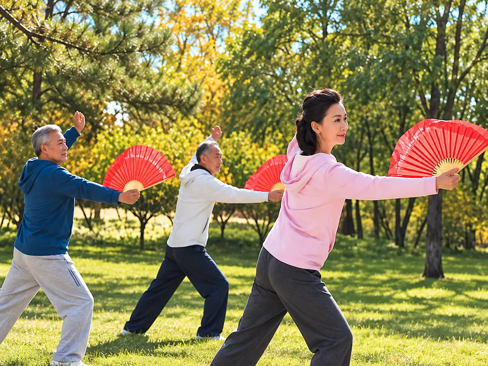

李文和白家月在公园里散步聊天儿。
Lý Văn và Bạch Gia Nguyệt đang đi dạo và trò chuyện trong công viên.
课文对话
分角色朗读对话 · Đọc phân vai đoạn hội thoại (Role-play the dialogue)
白家月
这里的老年人真不少。
Người cao tuổi ở đây thật đông.
李文
嗯，住在附近的老年人都会来这儿，有的散步，有的唱歌、跳舞，还有的打太极拳。
Ừm, người cao tuổi sống gần đây đều đến đây; có người đi dạo, có người hát, nhảy, còn có người tập Thái Cực Quyền.
白家月
他们的生活真丰富，让人羡慕。
Cuộc sống của họ thật phong phú, khiến người ta ngưỡng mộ.
李文
是的。有些人即使年龄大了，也坚持去老年班学习。
Đúng vậy. Có người dù tuổi đã cao vẫn kiên trì đến lớp dành cho người cao tuổi để học.
白家月
真是活到老学到老啊。
Đúng là sống đến già học đến già.
李文
对，我爷爷就每周都去老年班学电脑。他总说，老年人也要继续学习，“你看，我都七八十岁了，还上网和网友们聊天儿呢，生活一点儿都不无聊。”
Đúng, ông tôi tuần nào cũng đến lớp người cao tuổi học máy tính. Ông thường nói người cao tuổi cũng phải tiếp tục học: “Cháu xem, ông đã bảy tám mươi tuổi rồi mà vẫn lên mạng trò chuyện với bạn bè trên mạng, cuộc sống chẳng hề nhàm chán.”

听对话，选择正确答案 · Nghe và chọn đáp án
（1）白家月觉得公园里老年人的生活怎么样？
（2）李文的爷爷每周去老年班做什么？
根据课文内容回答问题 · Trả lời theo bài khóa
1
在公园里，老年人都会做些什么活动？
Trong công viên, người cao tuổi thường làm những hoạt động gì?
2
李文的爷爷为什么去老年班学习？
Vì sao ông của Lý Văn đến lớp dành cho người cao tuổi để học?
根据提示复述课文 · Kể lại bài khóa
李文和白家月在公园里散步。白家月觉得公园里的老年人……。李文说，住在附近的老年人都……，有的……，有的……，还有的……。白家月说，这里的老年人生活……，让人……。李文告诉她，有些老年人即使……，也坚持……。比如，他爷爷每周都去老年班……。爷爷说：“你看，我都……，还上网……呢，生活……。”